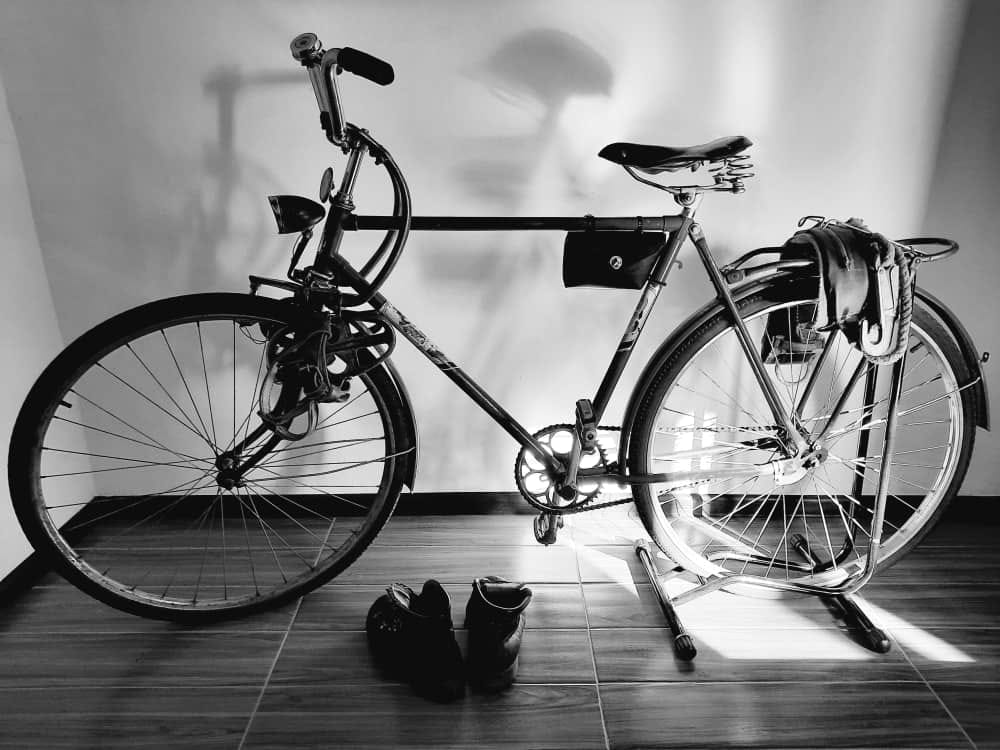

{% extends 'main/base.html' %}
{% block title %}
about
{% endblock %}
{% block content %}

"Одну из сложных сцен, когда пьяный Свет аке изливает свою душу другу Мансуру, который тоже еле держится на ногах, почему-то решили снять чуть ли не в начале съёмочного периода. Я уже не помню, но по-моему, инициатива исходила от оператора-постановщика Хасана Кыдыралиева, возможно, из-за того, что это были ночные съёмки.
Общеизвестно, пьяных играть трудно, всегда получается фальшиво, особенно выдают глаза. Я же, как непрофессиональный актёр, к тому же непьющий, решил для правдивого погружения в образ напиться, и эта новость сразу облетела всю группу. Всем было интересно посмотреть на пьяного режиссёра-трезвенника.
Не знаю, сколько "принял на грудь", но пьяным себя не чувствовал и вроде бы все получилось, по-станиславскому "верю", как мы со Станбеком Тойчубаевым, который был в роли Мансура, отыграли эпизод. Но Хасан не успокаивался и все время просил переснять, обычно он не настаивает, а тут при каждом удобном случае напоминал: "Мягкий фокус, на большом экране всё полезет..." В конце концов я согласился, съёмки близились к завершению, и образ добродушного Свет аке окончательно прижился во мне и уже не смел никому отказывать. Как заправский пьющий вошел в машину, где был установлен плейбек, там меня поджидали мои "собутыльники" Хасан, Бакыт Ниязалиев, который отвечал за звук и Станбек. "Между первой и второй надо успеть выпить ещё одну": мне и Станбеку досталось больше всех, как ответственным за предстоящее перевоплощение. В этот раз, я еле стоял на ногах, но ещё соображал, держась за велосипед, сказал: "Актеры готовы, давайте снимать, пока тёплые..." Брат Акылбек Абдыкалыков, который консультировал меня как актёра и занимался адаптацией диалогов на площадке, увидев моё состояние, предупредил: "Актан, теперь надо играть трезвого..."
На следующее утро стал смотреть видеозапись отснятого материала. Сцена длилась десять минут, посредством внутрикадрового монтажа строили мизансцену одним непрерывным кадром. Такое решение всегда требует неукоснительного соблюдения фокусных разметок, все это усугубилось ещё и тем, что была ночь. Несколько раз останавливался, ронял и поднимал велосипед, терял головной убор, приставал к Мансуру - и все это, как на трезвую голову - безупречное соблюдение всех технических требований оператора. Даже когда Станбек забывал свои реплики, обняв его, таким образом, скрывая от камеры артикуляцию губ, подсказывал ему текст. Вдрызг пьяный не только сам играл (точнее жил), но и искусно подыгрывал (сопереживал) партнёру. Если честно, что происходило в первых-вторых дублях, ничего не помню, только на третьем медленно стал приходить в себя. Я был настолько заряжен, что в каком бы состоянии ни находился, мог сыграть (прожить) любой эпизод из жизни моего экранного героя.
Как ни странно, в фильм вошёл первый дубль".
{% endblock %}